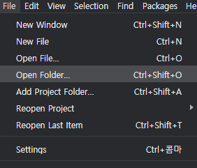
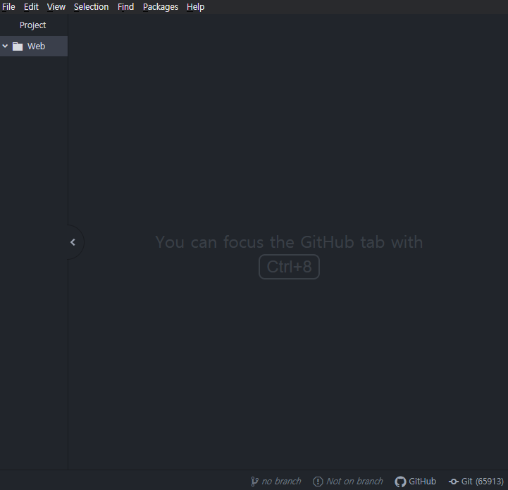

HTML 코딩을 하기 위해서는 크게 두 가지가 필요하다. 하나는 웹 브라우저가 있어야 된다.
그리고 또 하나는 HTML이라는 코드를 컴퓨터와 사람이 모두 이해할 수 있는 컴퓨터 언어의 문법에 맞게 작성해야 하는데 그 코드를 작성하는 프로그램이 필요하다.
그래서 이런 프로그램을 편집하는 프로그램이라는 뜻에서 에디터(EDITER)라고 부른다.
내가 선택한 도구는 ATOM이다.
이후 모든 설명은 ATOM을 기준으로 해보겠다.
내가 선택한 에디터는 그저 예시일 뿐이고, 굳이 ATOM이 아닌 다양한 에디터들이 있기 때문에 사용하고 싶은 다른 편집기를 찾아봐도 된다.
또한 필요한 것을 찾아내는 능력을 기르는 것은 매우 중요하기 때문에 직접 검색해서 찾아보는 것도 추천한다.
우선 각자 정한 에디터를 홈페이지에 들어가서 Download 해 준다.
Download 후에 에디터를 열어보면 이런 창이 뜨는데 지금 필요하지 않기 때문에 모두 꺼준다.
이렇게 꺼주고, 이제부터 에디터에서 HTML 파일을 만들고 그 결과를 웹 브라우저로 출력해 볼 것이다.
우선 바탕화면에 Web이라는 디렉터리를 만든다.
웹사이트를 만드는 프로젝트에서 사용되는 파일들은 Web이라는 디렉터리 안에 앞으로 저장될 것이라는 뜻이다.
|  |  |
그다음 에디터에서 파일을 선택하여 open folder(폴더 열기)를 선택해 준다.
파일을 선택하는 대화상자가 뜨는데 그중에서 바탕화면에 만든 web디렉터리를 클릭하고, select folder(파일 선택)를 눌러 준다.
폴더를 선택했다면 두개로 다시 쪼개질 것이다. 왼쪽은 web이라는 바탕화면에 생성한 디렉터리를 관리하는 화면이다.
파일을 하나 만들어 보자.
폴더에서 오른쪽을 클릭하여 new file 을 생성해 준다.
이런 창이 뜨는데 이곳에 '1.html'을 입력해 준다.
여기서 '.html' 은 웹페이지의 확장자라고 생각하면 된다.
그래서 우리는 1이라는 이름의 웹 페이지를 만들고 있는 것이다.
이 뒤에 있는 확장자는 마음대로 바꿔서는 안되고 앞에 있는 이름은 마음대로 아무거나 사용하여도 된다.
엔터를 치면 web이라는 디렉터리 안에 1.html이라는 파일이 생긴다.
그럼 이렇게 만든 웹페이지를 웹브라우저로 열어 보겠다.
아마 보통 웹페이지를 연다고 하면 아마도 주소창에 주소를 입력했을 것이다.
그것은 내 컴퓨터가 아닌, 그 주소에 해당되는 다른 컴퓨터에 저장되어 있는 웹 페이지를 우리가 읽고 싶을 때는 주소를 입력하기 때문이다.
하지만 우리가 지금 하려고 하는 것은 웹 브라우저와 같은 컴퓨터에 있는 파일인 1.html을 읽으려고 하는 것이다.
그런 경우에는 파일 열기라는 기능을 쓰면 된다.
거의 대부분의 브라우저에서 윈도우를 쓰면 'CTRL+O'
맥을 쓴다면 'Command+O' 이다.
단축키를 누르면 파일을 선택하는 창이 뜬다.
브라우저 중에 Microsoft Edge를 쓴다면 기능이 적용되지 않는다.
그런 경우에는 Chrome 또는 다른 브라우저로 바꿔보자.
바탕화면에 만들어 놓은 Web 파일에 들어가서 1.html을 열면 흰 화면이 뜰 것이다.
'Hello World'라고 입력하고 저장해 보자.
윈도우 Ctrl+S
맥 command+S
단축기 없이는 에디터 상단 file에서 save를 눌러 준다.
웹브라우저로 와서 새로고침 버튼을 누르고, 'Hello World'이라는 문자가 떴으면 우리는 웹페이지를 만들었고, 그 만들어진 웹 페이지를 웹브라우저로 실행했다.
또는 열어보는 것에 성공한 것이다.